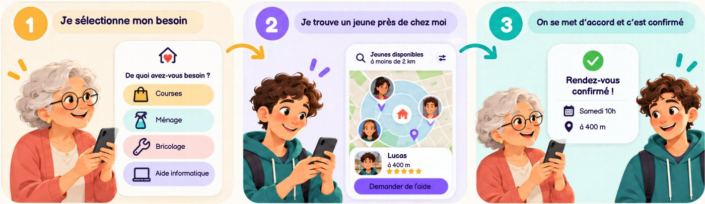
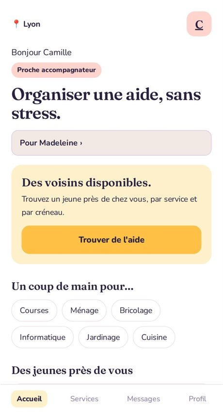
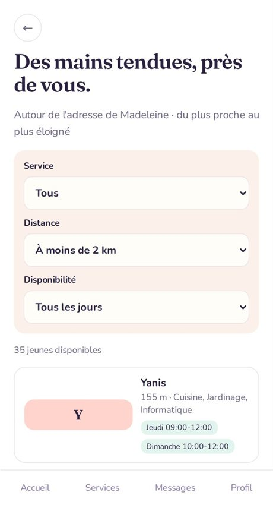
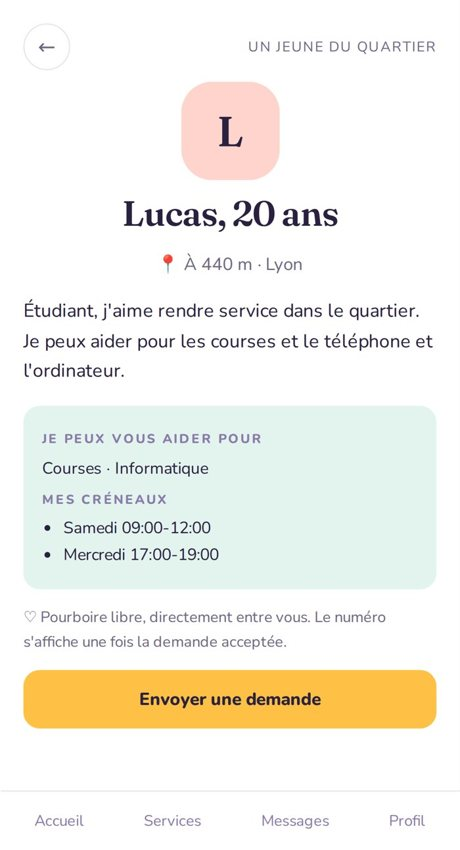
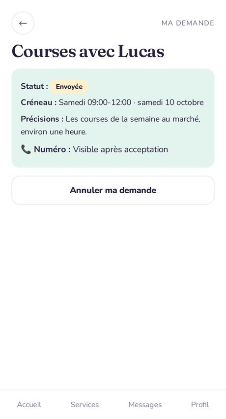

FONCTIONNEMENT
S’entraider, c’est simple.
Voisin d’Or relie les personnes âgées, leurs proches et les jeunes d’un même quartier. Pas de dossier compliqué : on crée son accès, on trouve un voisin disponible et on se rencontre.

Comment ça marche ?
Quatre étapes, pas plus.
ÉTAPE #1 · INSCRIPTION
Créez votre accès
Prénom, nom, e-mail et téléphone, puis un lien de connexion : pas de mot de passe. Vous agissez pour vous-même ou pour un proche, avec son accord.

ÉTAPE #2 · RECHERCHE
Trouvez un voisin disponible
Filtrez par service, distance et jour. La liste va du plus proche au plus éloigné.

ÉTAPE #3 · PROFIL
Choisissez en confiance
Le profil du jeune montre ses services, ses créneaux et la distance. Son numéro reste masqué.

ÉTAPE #4 · DEMANDE
Envoyez une demande
Choisissez un créneau et ajoutez quelques précisions. Dès que le jeune accepte, les numéros s’affichent.
